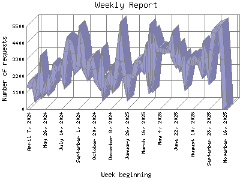

Analog 5.24
Analog 5.24 Report Magic for Analog 2.13
Report Magic for Analog 2.13The Weekly Report identifies the activity for each week within the report
time frame. Remember that one page hit can result in several server requests
as the images for each page are loaded.
Note: Depending on the
report time frame for this report the first and last week may not represent
a full seven day week, resulting in lower hits.

| Week beginning | Number of requests | Percentage of the requests | |
|---|---|---|---|
| 1. | November 16, 2025 | 8 | 0% |
| 2. | November 9, 2025 | 3,305 | 1.32% |
| 3. | November 2, 2025 | 5,412 | 2.17% |
| 4. | October 26, 2025 | 5,346 | 2.14% |
| 5. | October 19, 2025 | 5,316 | 2.12% |
| 6. | October 12, 2025 | 5,112 | 2.4% |
| 7. | October 5, 2025 | 3,942 | 1.58% |
| 8. | September 28, 2025 | 2,622 | 1.6% |
| 9. | September 21, 2025 | 3,432 | 1.38% |
| 10. | September 14, 2025 | 3,864 | 1.54% |
| 11. | September 7, 2025 | 2,730 | 1.10% |
| 12. | August 31, 2025 | 3,186 | 1.28% |
| 13. | August 24, 2025 | 3,156 | 1.27% |
| 14. | August 17, 2025 | 3,342 | 1.33% |
| 15. | August 10, 2025 | 3,114 | 1.24% |
| 16. | August 3, 2025 | 3,258 | 1.30% |
| 17. | July 27, 2025 | 2,995 | 1.20% |
| 18. | July 20, 2025 | 2,148 | 0.87% |
| 19. | July 13, 2025 | 3,204 | 1.29% |
| 20. | July 6, 2025 | 2,892 | 1.16% |
| 21. | June 29, 2025 | 3,660 | 1.47% |
| 22. | June 22, 2025 | 3,108 | 1.24% |
| 23. | June 15, 2025 | 3,432 | 1.38% |
| 24. | June 8, 2025 | 4,422 | 1.78% |
| 25. | June 1, 2025 | 3,918 | 1.57% |
| 26. | May 25, 2025 | 3,906 | 1.57% |
| 27. | May 18, 2025 | 3,834 | 1.53% |
| 28. | May 11, 2025 | 3,906 | 1.57% |
| 29. | May 4, 2025 | 3,948 | 1.59% |
| 30. | April 27, 2025 | 3,948 | 1.59% |
| 31. | April 20, 2025 | 4,404 | 1.77% |
| 32. | April 13, 2025 | 2,628 | 1.6% |
| 33. | April 6, 2025 | 3,972 | 1.60% |
| 34. | March 30, 2025 | 2,418 | 0.97% |
| 35. | March 23, 2025 | 3,510 | 1.40% |
| 36. | March 16, 2025 | 2,742 | 1.10% |
| 37. | March 9, 2025 | 3,012 | 1.20% |
| 38. | March 2, 2025 | 3,138 | 1.26% |
| 39. | February 23, 2025 | 3,078 | 1.23% |
| 40. | February 16, 2025 | 2,238 | 0.90% |
| 41. | February 9, 2025 | 2,136 | 0.86% |
| 42. | February 2, 2025 | 2,190 | 0.88% |
| 43. | January 26, 2025 | 1,416 | 0.57% |
| 44. | January 19, 2025 | 2,202 | 0.89% |
| 45. | January 12, 2025 | 3,174 | 1.28% |
| 46. | January 5, 2025 | 4,506 | 1.80% |
| 47. | December 29, 2024 | 3,273 | 1.31% |
| 48. | December 22, 2024 | 1,978 | 0.80% |
| 49. | December 15, 2024 | 1,596 | 0.63% |
| 50. | December 8, 2024 | 2,256 | 0.90% |
| 51. | December 1, 2024 | 1,800 | 0.72% |
| 52. | November 24, 2024 | 1,908 | 0.77% |
| 53. | November 17, 2024 | 1,446 | 0.58% |
| 54. | November 10, 2024 | 2,808 | 1.12% |
| 55. | November 3, 2024 | 1,620 | 0.64% |
| 56. | October 27, 2024 | 1,854 | 0.74% |
| 57. | October 20, 2024 | 2,670 | 1.7% |
| 58. | October 13, 2024 | 3,318 | 1.32% |
| 59. | October 6, 2024 | 3,174 | 1.28% |
| 60. | September 29, 2024 | 2,350 | 0.94% |
| 61. | September 22, 2024 | 2,687 | 1.8% |
| 62. | September 15, 2024 | 4,374 | 1.76% |
| 63. | September 8, 2024 | 4,740 | 1.90% |
| 64. | September 1, 2024 | 2,832 | 1.13% |
| 65. | August 25, 2024 | 2,628 | 1.6% |
| 66. | August 18, 2024 | 3,690 | 1.48% |
| 67. | August 11, 2024 | 4,344 | 1.73% |
| 68. | August 4, 2024 | 4,518 | 1.80% |
| 69. | July 28, 2024 | 3,840 | 1.53% |
| 70. | July 21, 2024 | 2,268 | 0.90% |
| 71. | July 14, 2024 | 2,910 | 1.17% |
| 72. | July 7, 2024 | 2,760 | 1.10% |
| 73. | June 30, 2024 | 2,649 | 1.7% |
| 74. | June 23, 2024 | 2,746 | 1.10% |
| 75. | June 16, 2024 | 1,836 | 0.73% |
| 76. | June 9, 2024 | 2,040 | 0.81% |
| 77. | June 2, 2024 | 1,260 | 0.50% |
| 78. | May 26, 2024 | 1,500 | 0.60% |
| 79. | May 19, 2024 | 1,188 | 0.48% |
| 80. | May 12, 2024 | 2,404 | 0.97% |
| 81. | May 5, 2024 | 1,261 | 0.50% |
| 82. | April 28, 2024 | 996 | 0.40% |
| 83. | April 21, 2024 | 1,860 | 0.74% |
| 84. | April 14, 2024 | 1,752 | 0.70% |
| 85. | April 7, 2024 | 1,377 | 0.56% |
Most active week beginning November 2, 2025 : 5,412 requests handled.
Weekly average: 2938 requests handled.
This report was generated on November 17, 2025 01:09.
Report time frame April 8, 2024 11:04 to November 16, 2025 04:46.
| Web statistics report produced by: | |
| Analog 5.24 | Report Magic for Analog 2.13 |